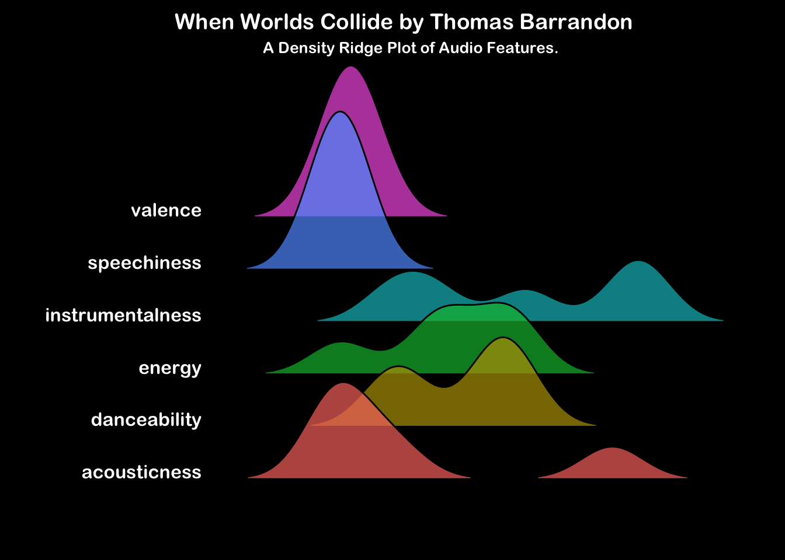

When Worlds Collide
Instrumental
Synthwave
Electronic
Electro
Thomas Barrandon’s understated scifi masterpiece
A Cosmic Convergence
The EP offers a mesmerising journey through electronic soundscapes, evoking a sense of otherworldly exploration. Barrandon masterfully combines retro synthwave elements with modern cinematic vibes.
For a formal description of the audio feature categories presented here, please consult the Spotify Developer API Documentation.
Overall, a laid-back and peaceful affair, with distribution in the lower valence and speechiness values. Acousticness and instrumentalness are mostly confined to lower values, with the distinct exception of the final track, “A New Start”. A broad middle-range distribution in energy and danceability is common across all tracks.
Interpreting the Ridge Plot (Click to expand)
These ridge plots show a histogram of the mean audio feature values across each track in the album. Look across the horizontal axis at where the peaks for each feature occur. For example, if the album contains lots of tracks with busy vocals, the speechiness feature will show a peak to the right of the horizontal axis. Conversely, an instrumental album would have a speechiness peak to the left of the horizontal axis but you would also expect it to have a peak to the right of the axis in the instrumentalness feature.
The Tracks
Below are the mean audio feature values for each track. The last row (green) presents a mean summary of the album.
| track_name | danceability | energy | speechiness | acousticness | instrumentalness | valence |
|---|---|---|---|---|---|---|
| Extinction | 0.511 | 0.3610 | 0.03490 | 0.199000 | 0.9360 | 0.0741 |
| Doomsday Clock | 0.477 | 0.5160 | 0.02780 | 0.001440 | 0.3090 | 0.1080 |
| Pale Blue Dot | 0.172 | 0.3050 | 0.03360 | 0.020400 | 0.8900 | 0.0347 |
| Fragment | 0.559 | 0.5500 | 0.04330 | 0.069800 | 0.1870 | 0.0734 |
| New Start | 0.236 | 0.0355 | 0.03110 | 0.836000 | 0.5810 | 0.0388 |
| Album Mean | 0.391 | 0.3535 | 0.03414 | 0.225328 | 0.5806 | 0.0658 |
…
Extinction
The opening track sets the tone with its haunting melodies and pulsating beats. It’s reminiscent of the Stranger Things theme, yet maintains its unique identity, aiming for a more subtle tension to emerge.
Doomsday Clock
From the outset a percussive metronome gradually builds tension. A brooding composition, the synths create an eerie atmosphere, leaving you on the edge of anticipation.
Pale Blue Dot

A beautiful piece that balances melancholy and hope. The delicate piano interludes blend seamlessly with the electronic textures.
Fragment
The standout track, this shorter number feels like a glitch in the matrix. Its beats and fragmented sounds add an intriguing layer.
New Start
Short but impactful, this track offers a sense of resolution. The uplifting melodies and arpeggios leave you with a feeling of renewal. Peaceful piano is used to great effect, a distinct step change to the synth of the rest of the EP.
Overall
When Worlds Collide is a journey that transcends time and space. Each track contributes to the EP’s cohesive narrative, making it a must-listen for fans of synthwave and ambient music.
For more music to encourage your work efforts, check out Productivity Pulse.